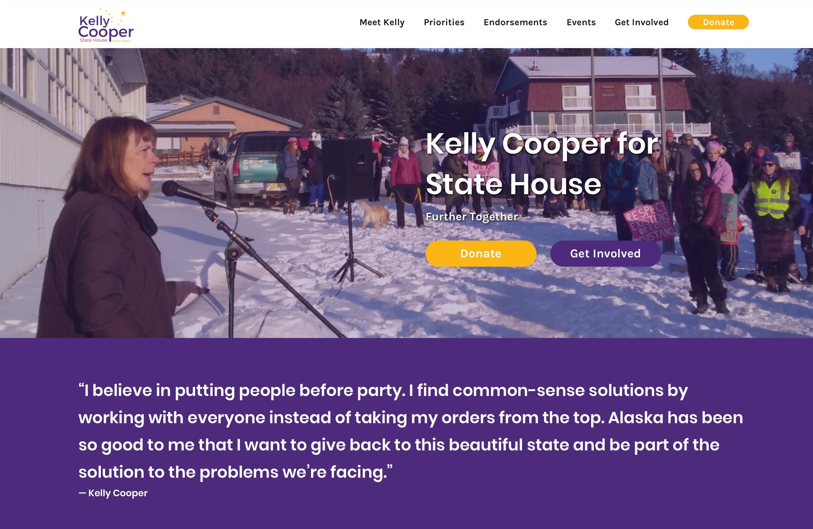
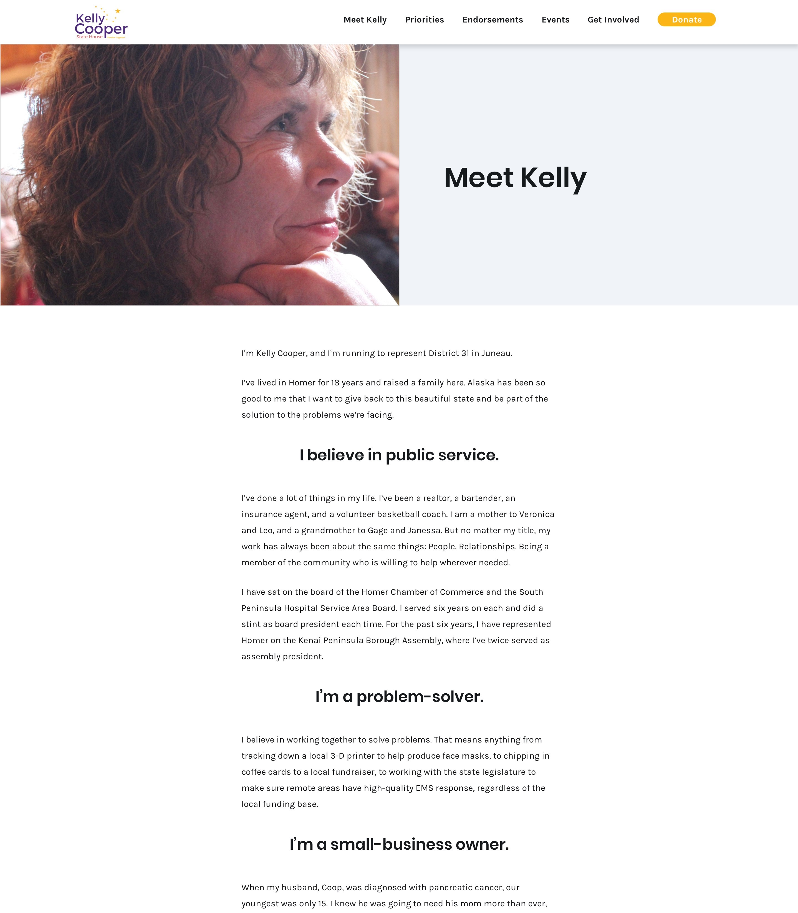
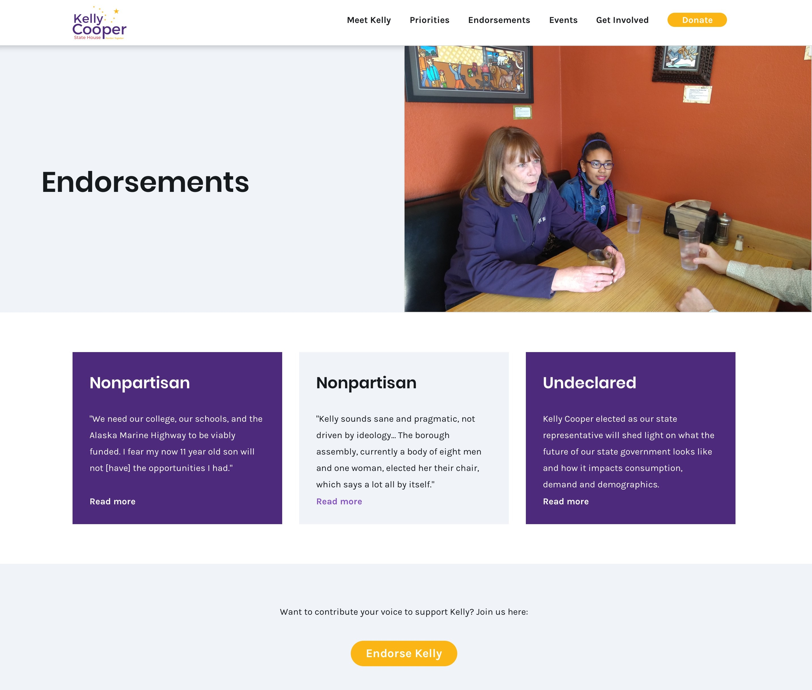

Overview
Since the 2016 election, I've sought out ways to be more engaged in the political process. I started out by volunteering for Run for Something, a progressive organization dedicated to recruiting and supporting young candidates running for down-ballot offices. More recently, I've worked with Tech for Campaigns, lending my digital skills to build websites for down-ballot candidates. These candidates desire to reach out to and serve their communities effectively, but may lack the toolkit to do so, which is where I come in.
Objective:
Design a website that clearly informs potential voters of the candidate's background and priorities, while reflecting the candidate's values and aesthetic.
Learning about the candidate
We started out with a kick-off call with the candidate, which was extremely helpful to understand her priorities and the general feeling she conveyed in her in-person communication. The candidate spoke eloquently about the importance of being a responsive leader. She struck me as down-to-earth, levelheaded, and resourceful - just the type of person I would trust to govern, and I wanted to convey that feeling in the design.
The candidate and her campaign manager talked us through their resources and outreach. Analytics showed that the most powerful posts had been those of the candidate in direct communication with residents, while more text-heavy posts tended to struggle. The message was clear: The website would need to share the candidate's narrative.
Design
The candidate already had selected a logo in tandem with her brand, recognizable in her community. I retained these colors for her website, with call-to-action buttons in purple and yellow. I slightly modified her primary purple to be used as text links, to increase visibility against black text.

I found the most challenging aspect of designing this website to be selecting the most impactful photos in her gallery. Because of the COVID-19 pandemic and its resulting quarantine period, it was not possible to have additional photos taken, either solo professional shots or of the candidate in front of an audience. I was only able to choose from a limited number of existing pictures.
For the landing page, I chose a header image reflecting the candidate's desire to communicate directly with the residents of her community. For the inner pages, I selected pictures that demonstrated the candidate's good nature and idealism. These more personal touches solidified the candidate as approachable and down-to-earth.
The landing page showed the candidate at her community's Women's March, followed by a quote representing her campaign
The "Meet the Candidate" page was a fun one to design. I established a clear hierarchy through typography, utilizing a bold style in large font to break up chunks where the candidate elaborated on each aspect of her background. One draft included additional photos to illustrate her story, but the team decided to move forward with a text-heavy version.

I found the "Endorsements" page to be an interesting challenge. The endorsements the campaign had received were long-form letters, mostly from residents rather than public figures. My team was concerned that the letters might go unread if we posted them outright. I chose to move forward by creating a card for each endorsement. Each card would list the endorser's political affiliation, a relevant snippet from the endorsement text, and a link to the full PDF for those who were interested in reading more. The candidate had expressed it was important for potential voters to recognize the wide range of her supporters' political beliefs, and I saw this as an opportunity to showcase this.

Full website.
Details
Context
Volunteer project with Tech for Campaigns
Date
April 2020 - May 2020
Tools
Sketch, Zeplin
Role
UX Designer
Deliverables
User interface
Device
Desktop computer, mobile device